BUILD YOUR FUTURE THROUGH THE POWER OF SCIENCE
Explore Biology, Physics and Chemistry through conceptual learning, practical education and a student-focused academic environment designed for Intermediate students.
4 Core
Botany, Zoology, Physics & Chemistry
Practical
Modern Laboratory Curriculum
Medical Path
Foundation for Healthcare Careers
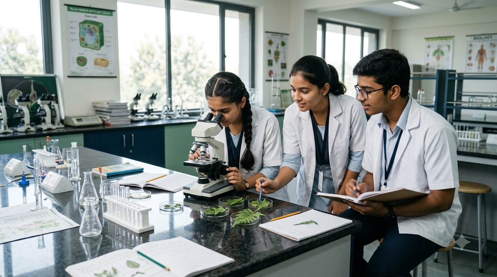
Conceptual Focus
NCERT & Intermediate Board Aligned
Hands-on Experiments
Dedicated Subject Laboratories
A Strong Foundation in Intermediate Biological & Physical Sciences
Intermediate education forms the defining academic bridge between school studies and specialized higher education. In the BiPC stream, students engage deeply with the biological world and the foundational laws of nature.
Through systematic instruction across Botany, Zoology, Physics, and Chemistry, our educational framework encourages students to observe living organisms microscopically, comprehend physiological systems, understand chemical transformations, and apply physical principles to solve real-world problems.
Whether aspiring toward medicine, allied healthcare, pharmaceuticals, biotechnology, or research, a strong conceptual foundation in Intermediate BiPC equips learners with analytical clarity and intellectual curiosity.
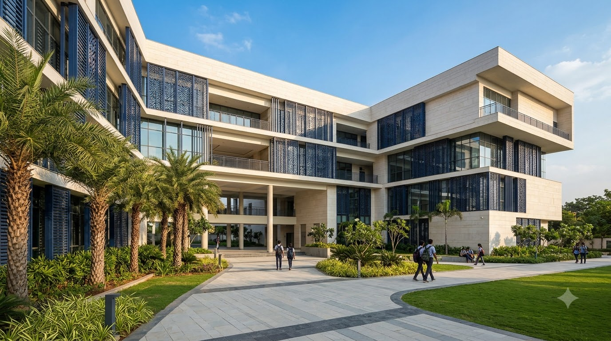
The Four Pillars of BiPC Education
Intermediate BiPC integrates plant science, animal biology, physical mechanics, and molecular chemistry to form a comprehensive scientific foundation.
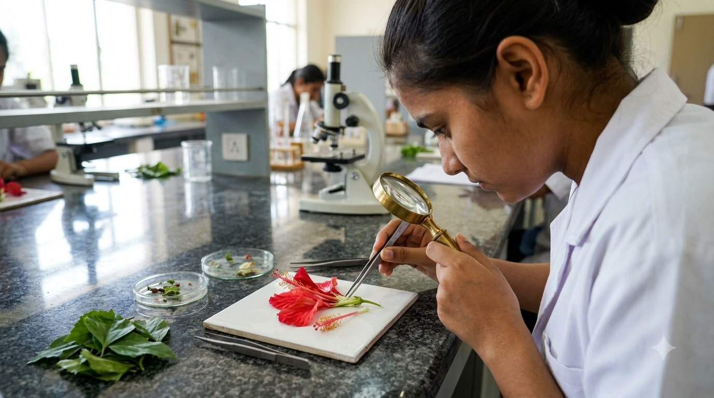
Botany
Explore plant biology, taxonomy, floral morphology, cellular anatomy, plant physiology, and ecological relationships sustaining our biosphere.
Explore Botany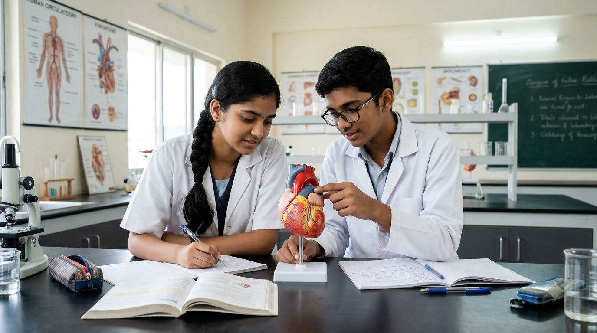
Zoology
Understand animal diversity, structural organisation, human physiology, circulatory and nervous systems, genetics, and evolutionary biology.
Explore Zoology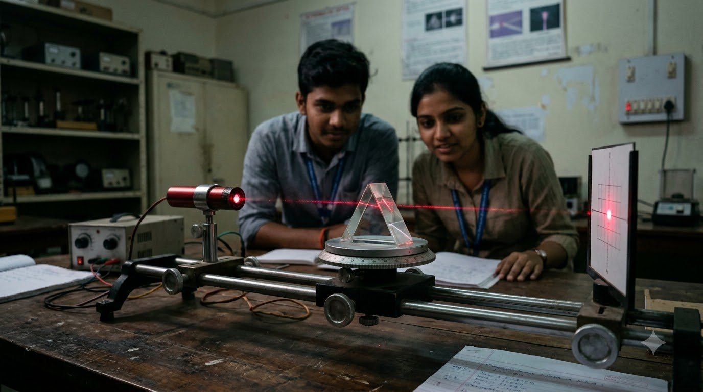
Physics
Master fundamental principles of matter, motion, energy, optics, thermodynamics, electricity, magnetism, and atomic physics.
Explore Physics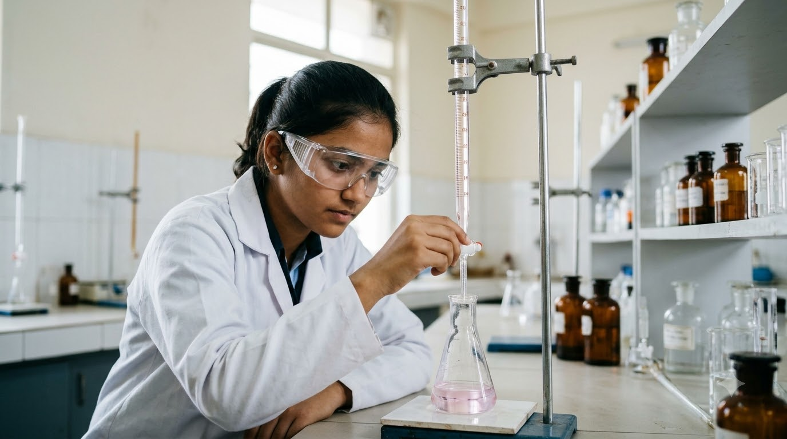
Chemistry
Explore chemical bonding, physical thermodynamics, molecular equilibria, organic reaction mechanisms, and periodic element properties.
Explore ChemistryWhy Choose Intermediate BiPC?
The BiPC stream unlocks diverse academic pathways across life sciences, healthcare systems, scientific research, and applied clinical technologies.
Strong Biology Foundation
In-depth exploration of both Botany and Zoology, developing nuanced understanding of cellular mechanisms, plant ecosystems, and human physiology.
Scientific Understanding
Cultivates systematic scientific inquiry, encouraging students to analyze evidence, understand cause-and-effect, and appreciate empirical verification.
Practical Laboratory Learning
Hands-on microscope slide preparation, titration analysis, botanical sectioning, and physical apparatus verification build practical confidence.
Concept-Based Teaching
Emphasis on core fundamental concepts rather than rote memorization, enabling students to tackle analytical problems and board examinations effortlessly.
Academic Mentorship
Structured academic monitoring, regular doubt-clearing sessions, and dedicated mentor guidance to support individual student pace and goals.
Medical Career Guidance
Comprehensive orientation towards undergraduate medical entrance examinations (NEET-UG), pharmacy, biotechnology, and agricultural pathways.
The 6-Stage Learning Journey
A structured pedagogical model that progresses from conceptual fundamentals to diagrammatic mastery and evaluative practice.
Understand the Concept
Break down intricate biological theories and physical laws into intuitive, digestible scientific principles.
Learn Through Diagrams
Master precise biological diagrams, ray tracings, floral diagrams, and organic molecular reaction pathways.
Study Scientific Principles
Integrate theoretical laws with mathematical derivations and physical formulas across mechanics and physical chemistry.
Perform Practical Activities
Reinforce classroom lectures through specimen examination, microscopy, chemical analysis, and physics experiments.
Practice Questions
Solve chapter-wise descriptive questions, board-style model problems, and objective MCQs systematically.
Revise & Evaluate Progress
Continuous periodic assessments, diagnostic feedback, and structured revision cycles to reinforce long-term memory.
Our Learning Environment
Illustrative overview of classrooms, modern science laboratories, and resource centers dedicated to Intermediate BiPC students.
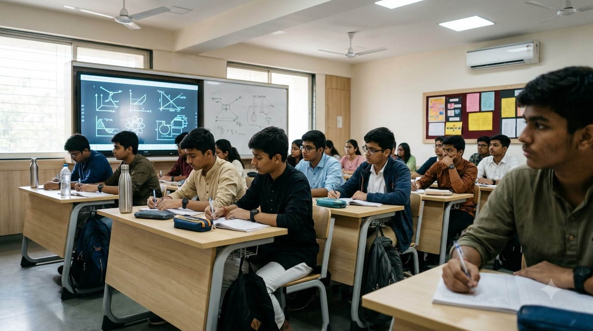
Smart Classrooms
Equipped with digital presentation aids for 3D biological animations and interactive scientific models.
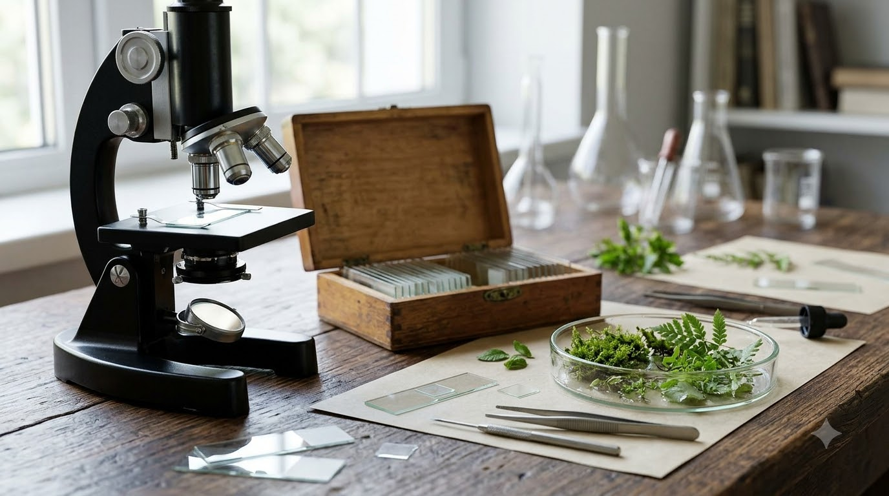
Botany Laboratory
Dedicated botanical specimen cabinets, dissecting stages, staining reagents, and plant anatomy slides.
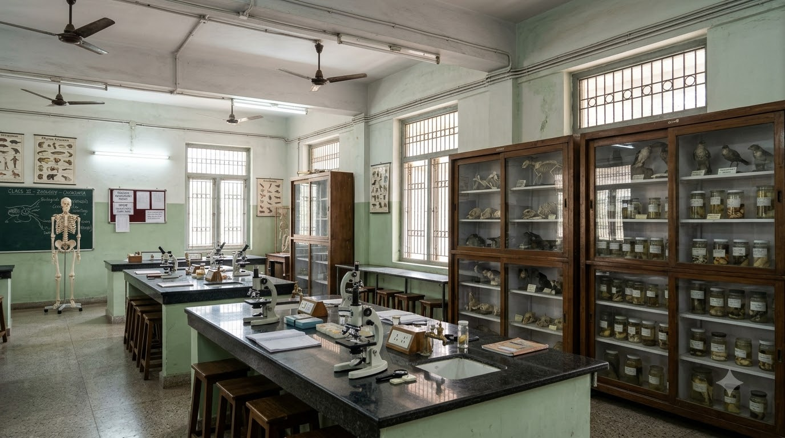
Zoology Laboratory
Preserved invertebrate/vertebrate specimens, anatomical charts, and binocular compound microscopes.
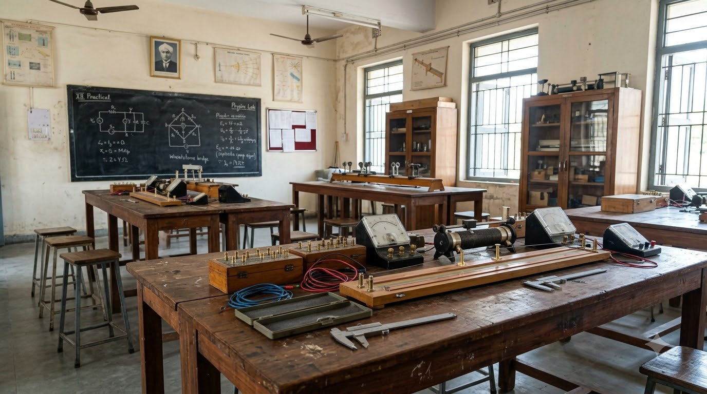
Physics Laboratory
Equipped for optical benches, screw gauges, spherometers, galvanometers, and resonance experiments.
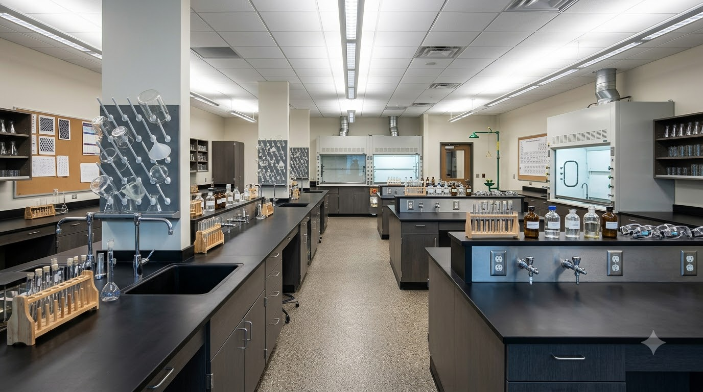
Chemistry Laboratory
Specialized ventilation, salt analysis stations, burettes for volumetric titration, and safety apparatus.
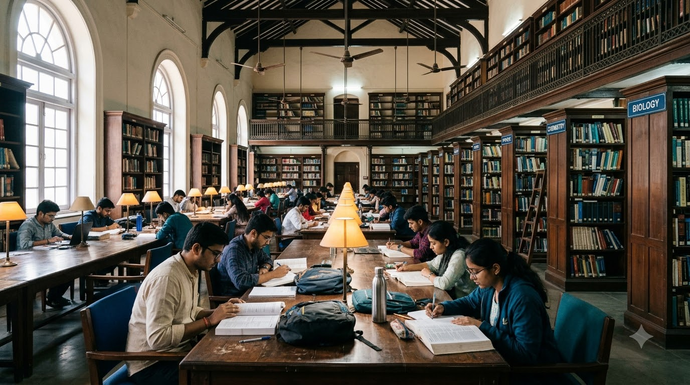
Science Library & Study Areas
Extensive reference books, NCERT exemplar guides, question banks, and quiet self-study zones.
Fostering Scientific Aptitude & Core Life Skills
Intermediate study builds disciplined academic habits, intellectual vigor, and personal resilience.
Scientific Thinking
Training students to question hypotheses, analyze empirical observations, and draw logical scientific deductions.
Observation Skills
Cultivating fine microscopic observation, morphological detail identification, and meticulous record keeping.
Analytical Reasoning
Building multi-step reasoning capabilities required for complex physics derivations and stoichiometric chemistry calculations.
Communication Skills
Articulating biological concepts clearly using precise scientific terminology, diagrams, and structured oral explanations.
Problem-Solving Activities
Daily practice solving numerical challenges, genetics Punnett squares, and chemical equilibrium equations.
Time Management
Structuring balanced daily study routines, prioritizing high-yield topics, and mastering timed examination conditions.
Academic Activities & Science Expos
Active participation in science seminars, botanical exhibitions, and quiz competitions enhances real-world scientific interest.
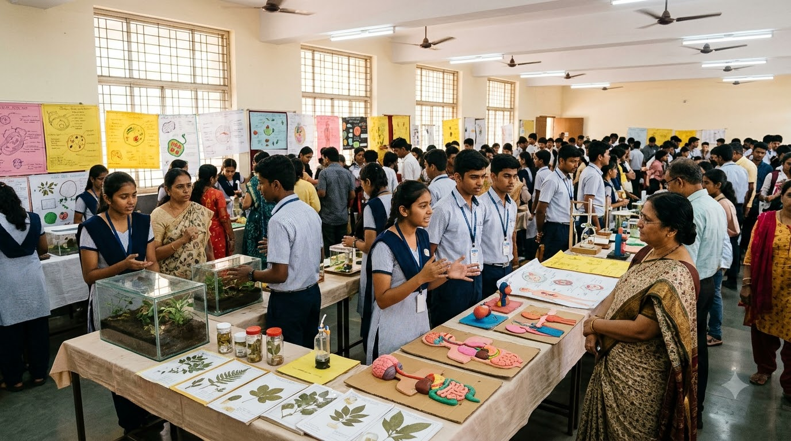
Biology Exhibitions
Student-created anatomical models, herbal classification displays, and ecology dioramas.
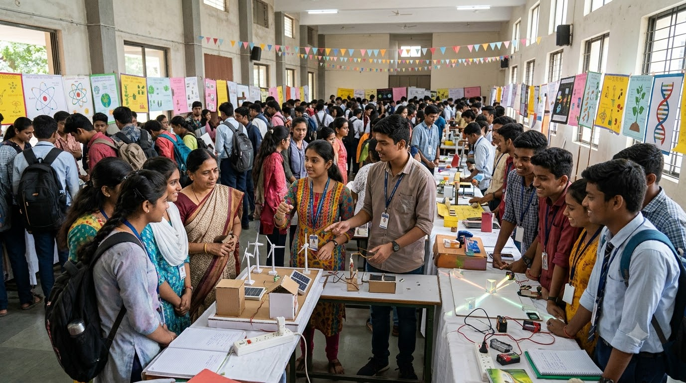
Science Exhibitions
Interactive working models in renewable energy, optics, and green chemistry demonstrated by students.
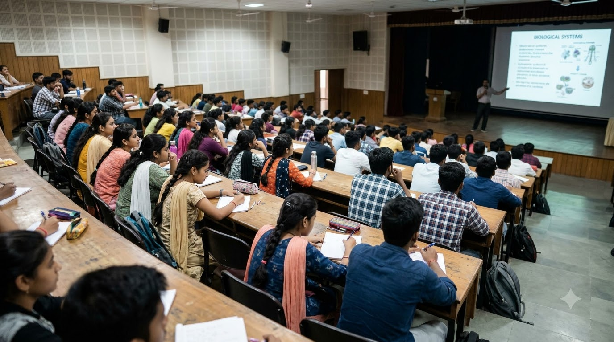
Educational Workshops
Interactive guest lectures by science educators on emerging trends in biotechnology and genetics.
Structured NEET-UG Preparation Framework
The National Eligibility cum Entrance Test (NEET-UG) evaluates deep conceptual comprehension in Biology (Botany & Zoology), Physics, and Chemistry.
A successful preparation model harmonizes Intermediate board curriculum requirements with rigorous multiple-choice question practice, NCERT line-by-line reading, and timed test simulations.
- Biology Mastery: Comprehensive coverage of NCERT Botany and Zoology
- Physics Numericals: Speed, accuracy, and formula shortcut techniques
- Chemistry Balance: Physical calculations, organic mechanisms & inorganic facts
- Regular Mock Tests: OMR-based test practice and error diagnostics
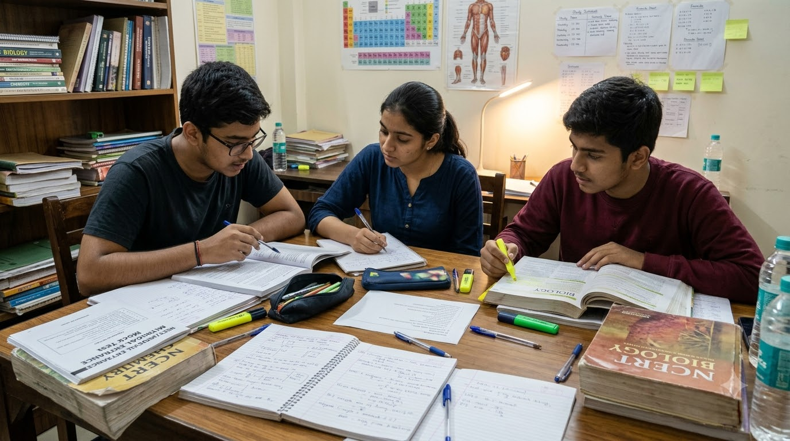
Where Can Intermediate BiPC Take You?
Intermediate BiPC opens doors to a vast spectrum of healthcare, pharmaceutical, agricultural, and biological sciences degrees.
Medicine & Dentistry
MBBS, BDS, BAMS, BHMS, BUMS, and Veterinary Science (B.V.Sc).
Allied Healthcare
B.Sc Nursing, Physiotherapy (BPT), Radiology, and Medical Lab Tech.
Pharmacy & Biotech
B.Pharm, Pharm.D, Biotechnology, Genetics, and Microbiology.
Agriculture & Research
B.Sc Agriculture, Horticulture, Forestry, Food Tech, and Life Sciences.
Voices from the Academic Journey
Sample perspectives illustrating student learning progression and parent engagement in Intermediate education.
"Studying Botany and Zoology with continuous microscope practicals made cellular concepts crystal clear. The daily practice problems helped build examination speed."
"The structured Physics numerical sessions and chemical equation balance drills removed my fear of physical chemistry. The faculty mentorship was truly steady."
"As a parent, regular academic progress updates and disciplined attendance monitoring gave us immense reassurance throughout the two Intermediate years."